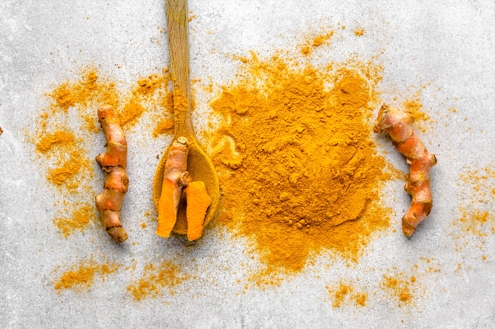
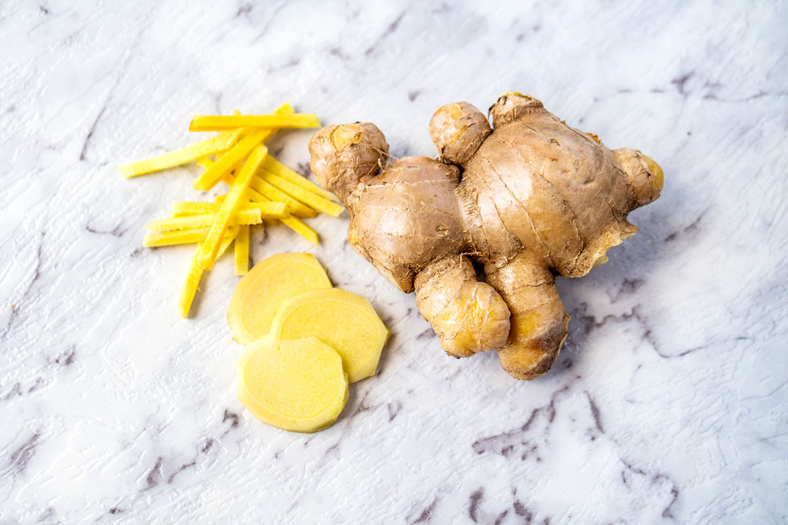
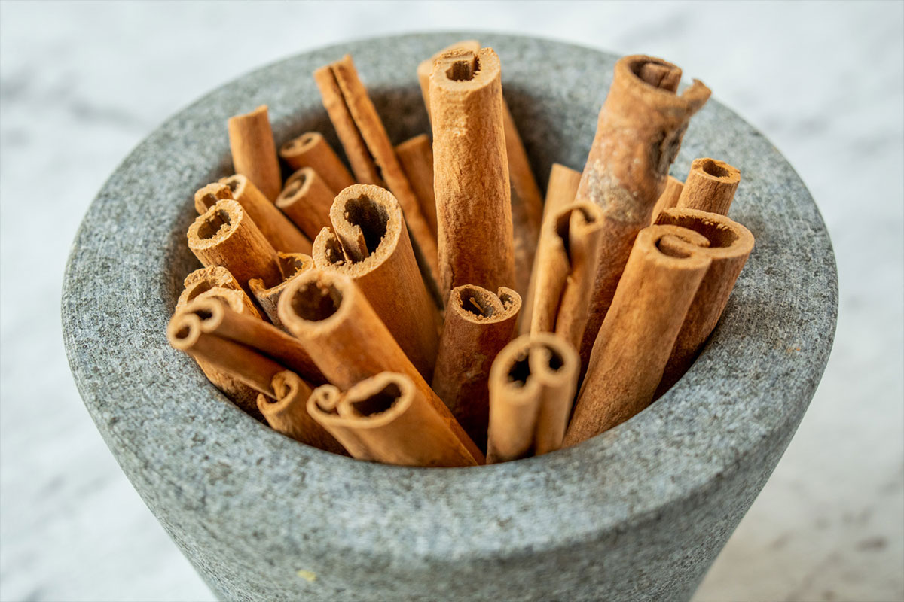
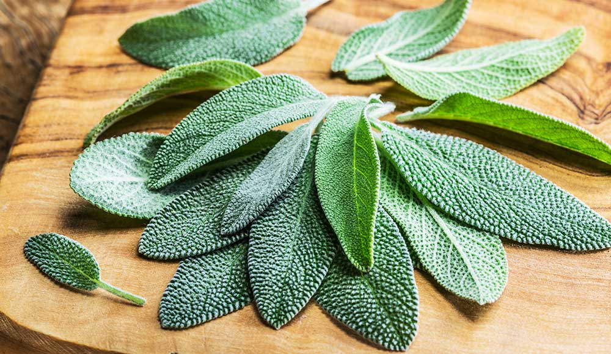
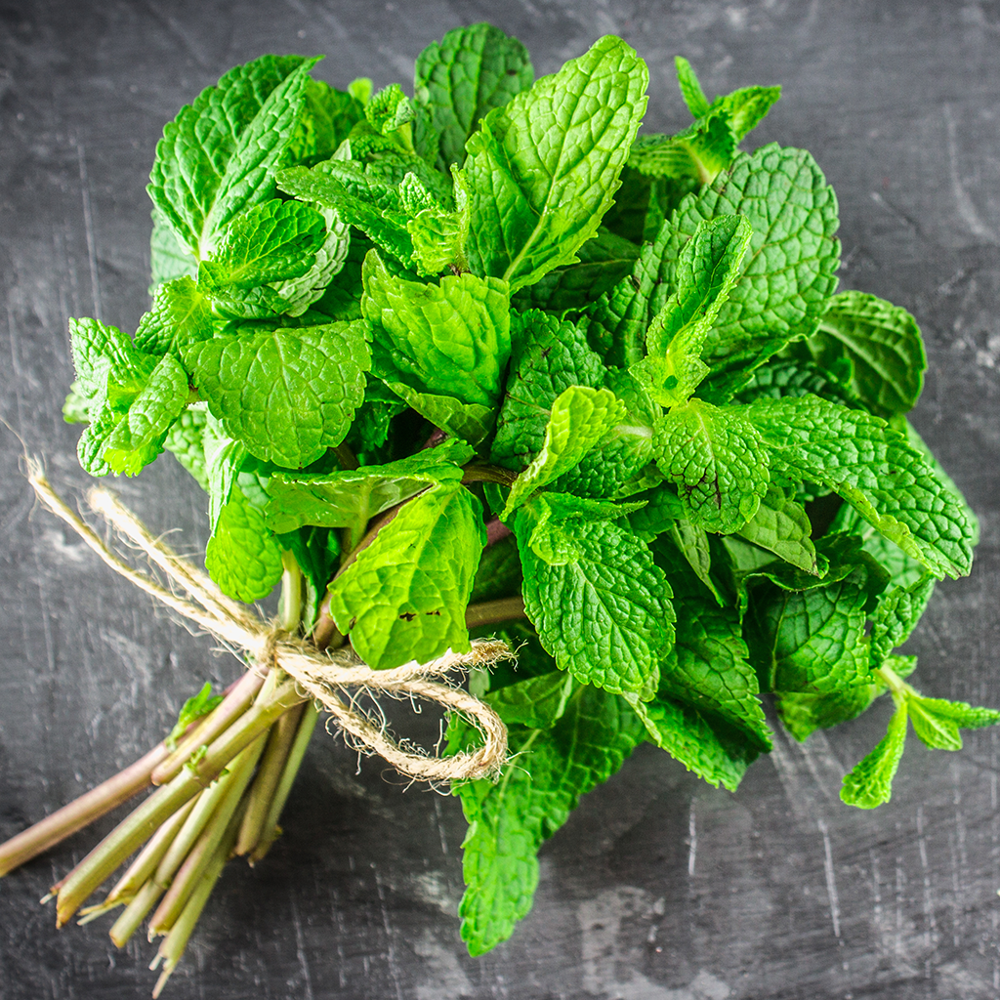
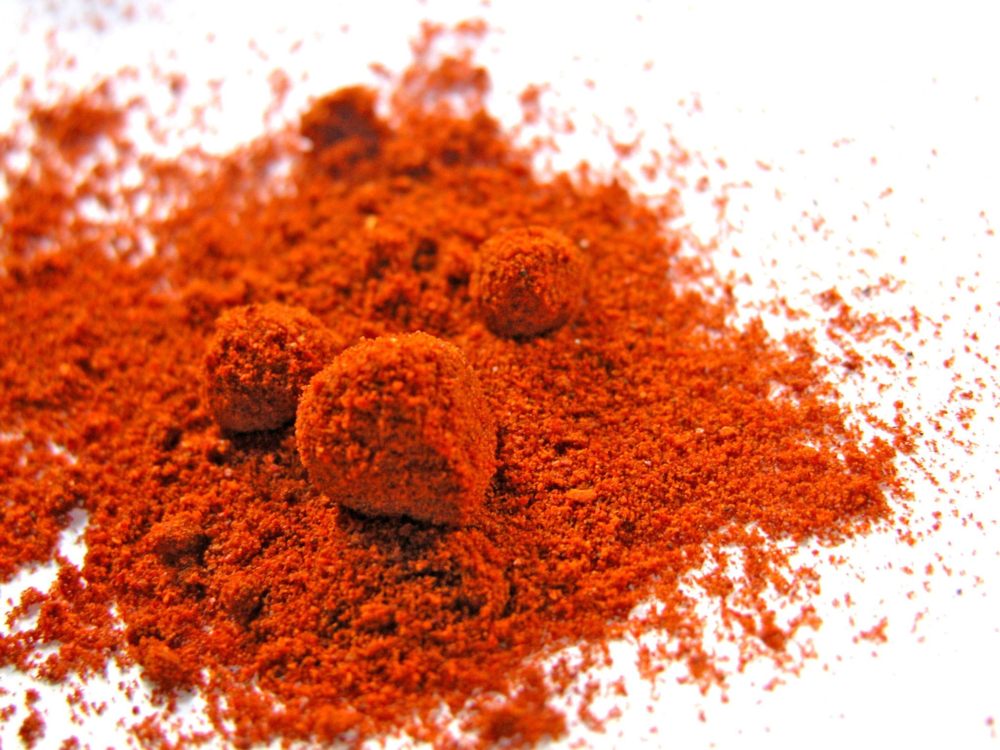
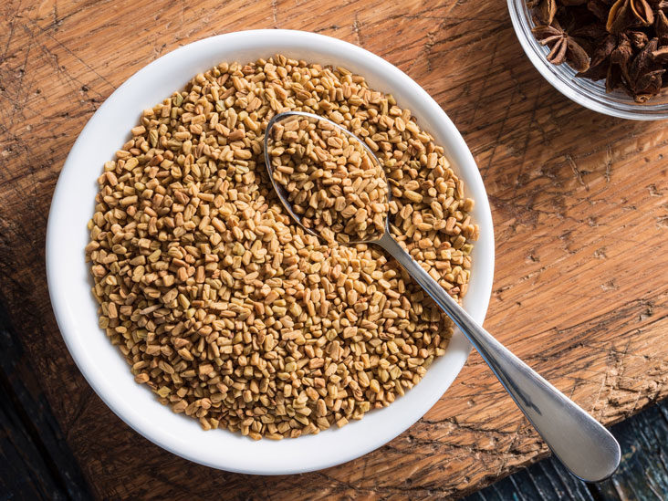
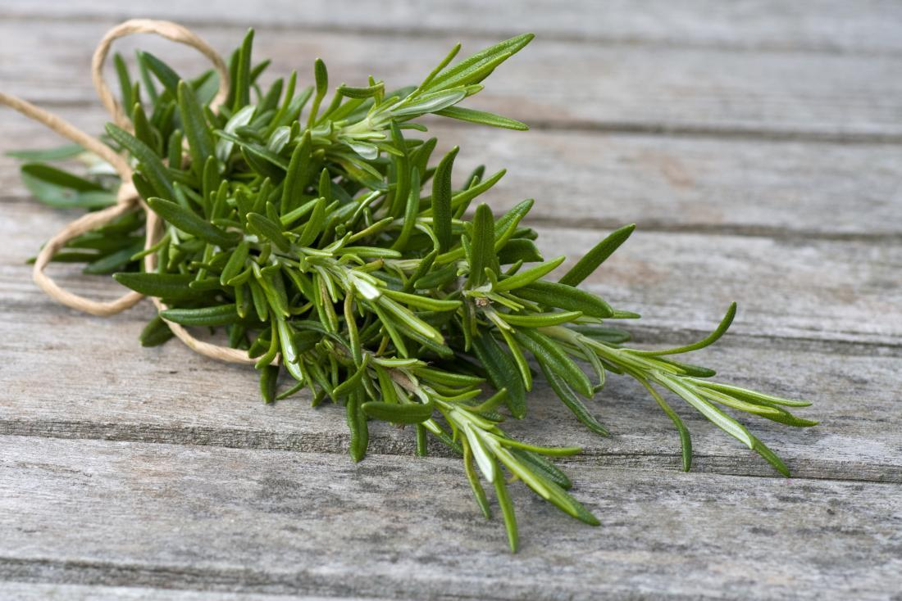
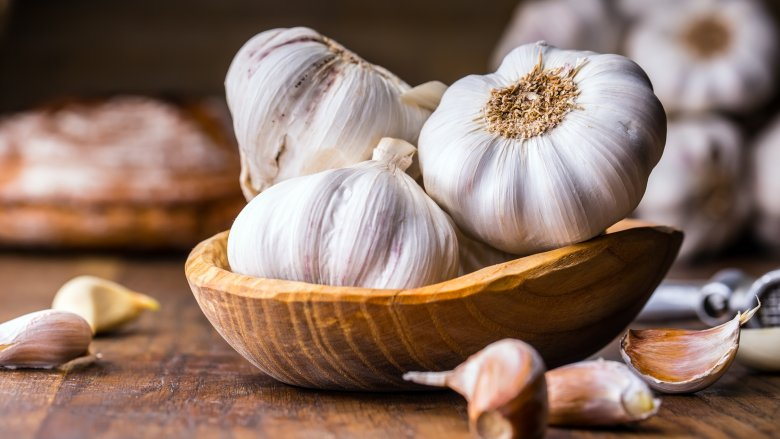

-

Turmeric
Turmeric is the spice that gives curry its yellow color. It contains several compounds with medicinal properties, the most important of which is curcumin. Curcumin is a remarkably powerful antioxidant, helping to fight oxidative damage and boosting the body’s own antioxidant enzyme. This is important, because oxidative damage is believed to be one of the key mechanisms behind ageing and many diseases. Curcumin is also strongly anti-inflammatory, to the point where it matches the effectiveness of some anti-inflammatory drugs. Given that long-term, low-level inflammation plays a major role in almost every chronic Western disease, it is not suprising to see that curcumin is linked to a variety of health benefits.
Studies suggest that it can improve brain function, fight Alzheimer’s, reduce the risk of heart disease and cancer, and relieve arthritis, to name a few.
Here is an article about the many incredible health benefits of turmeric/curcumin.
Bottom Line: Studies have shown that curcumin, the active ingredient in the spice turmeric, has major benefits for many aspects of health.
-

Ginger
Ginger is a popular spice used in several forms of alternative medicine.
Studies have consistently shown that 1 gram or more of ginger can successfully treat nausea.
This includes nausea caused by morning sickness, chemotherapy and sea sickness.
Ginger also appears to have strong anti-inflammatory properties, and can help with pain management.
One study in subjects at risk for colon cancer found that 2 grams of ginger extract per day decreased markers for colon inflammation in the same way as aspirin.
Other research found that a mixture of ginger, cinnamon, mastic, and sesame oil decreased pain and stiffness experienced by those with osteoarthritis. It had a similar effectiveness as treatment with aspirin or ibuprofen.
Bottom Line: 1 gram of ginger appears to be an effective treatment for many types of nausea. It is also anti-inflammatory, and can help reduce pain.
-

Cinnamon
It contains a compound called cinnamaldehyde, which is responsible for cinnamon’s medicinal properties. It has potent antioxidant activity, helps fight inflammation and has been shown to lower cholesterol and triglycerides in the blood. But where cinnamon really shines is in its effects on blood sugar levels. Cinnamon can lower blood sugar by several mechanisms, including by slowing the breakdown of carbs in the digestive tract and improving insulin sensitivity. The effective dose is typically 0.5-2 teaspoons of cinnamon per day, or 1-6 grams.
Bottom Line: Cinnamon has numerous health benefits, and is particularly effective at lowering blood sugar levels.
-

Sage
Sage gets its name from the Latin word Salvere, which means “to save.” It had a strong reputation for its healing properties during the middle ages, and was even used to help prevent the plague. Current research indicates that sage may be able to improve brain function and memory, especially in people with Alzheimer’s disease. Alzheimer’s disease is accompanied by a drop in the level of acetylcholine, a chemical messenger in the brain. Sage inhibits the breakdown of acetylcholine. In a 4-month study of 42 individuals with mild to moderate Alzheimer’s disease, sage extract was shown to produce significant improvements in brain function. Other studies have also shown that sage can improve memory function in healthy people, both young and old.
Bottom Line: There is promising evidence that sage extract can improve brain and memory function, especially in individuals with Alzheimer’s disease.
-

Peppermint
Peppermint has a long history of use in folk medicine and aromatherapy.
As is the case with many herbs, it is the oily component that contains the agents responsible for the health effects.
Many studies have shown that peppermint oil can improve pain management in irritable bowel syndrome, or IBS.
It appears to work by relaxing the smooth muscles in the colon, which relieves pain experienced during bowel movements. It also helps to reduce abdominal bloating, which is a common digestive symptom.
There are also some studies showing that peppermint in aromatherapy can help fight nausea.
In a study of over 1,100 women in labor, peppermint aromatherapy caused significant reductions in nausea. It has also been shown to reduce nausea after surgery and C-section births.
Bottom Line: The natural oil in peppermint provides pain relief for those with IBS. It also has potent anti-nausea effects when used in aromatherapy.
-

Cayenne
Cayenne pepper is a type of chili pepper used to prepare spicy dishes.
The active ingredient in it is called capsaicin, which has been shown to reduce appetite and increase fat burning in many studies.
For this reason, it is a common ingredient in many commercial weight loss supplements.
One study found that adding 1 gram of red pepper to meals reduced appetite and increased fat burning in people who did not regularly eat peppers.
However, there was no effect in people who were accustomed to eating spicy food, indicating that a tolerance to the effects can build up.
Some animal studies have also found capsaicin to combat certain forms of cancer, including lung, liver and prostate cancer.
Of course, these observed anti-cancer effects are far from being proven in humans, so take all of this with a big grain of salt.
Bottom Line: Cayenne pepper is very rich in a substance called capsaicin, which reduces appetite and boosts fat burning. It has also shown anti-cancer potential in animal studies.
-

Fenugreek
Fenugreek was commonly used in Ayurveda, particularly to enhance libido and masculinity.
While its effects on testosterone levels are inconclusive, fenugreek does seem to have beneficial effects on blood sugar.
It contains the plant protein 4-hydroxyisoleucine, which can improve the function of the hormone insulin.
Many human studies have shown that at least 1 gram of fenugreek extract per day can lower blood sugar levels, particularly in diabetics.
Bottom Line: Fenugreek has been shown to improve the function of insulin, leading to significant reductions in blood sugar levels.
-

Rosemary
The active ingredient in rosemary is called rosmarinic acid.
This substance has been shown to suppress allergic responses and nasal congestion.
In a study with 29 individuals, both 50 and 200 mg doses of Rosmarinic acid were shown to suppress allergy symptoms.
The number of immune cells in nasal mucus also decreased, with reduced congestion.
Bottom Line: Rosmarinic acid has anti-inflammatory effects that appear to suppress allergy symptoms and reduce nasal congestion.
-

Garlic
Throughout ancient history, the main use of garlic was for its medicinal properties.
We now know that most of these health effects are due to a compound called allicin, which is also responsible for garlic’s distinct smell.
Garlic supplementation is well known for combatting sickness, including the common cold.
If you often get colds, then adding more garlic to your diet could be incredibly helpful.
There is also convincing evidence for beneficial effects on heart health.
For those with high cholesterol, garlic supplementation appears to reduce total and/or LDL cholesterol by about 10-15%.
Human studies have also found garlic supplementation to cause significant reductions in blood pressure in people with high blood pressure.
In one study, it was just as effective as a blood pressure lowering drug.